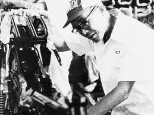

Honda behoort absoluut tot één van de grootste autofabrikanten  ter wereld, maar is ook één van de grotere aanbieders van motorfietsen, buitenboordmotoren voor boten,
grasmaaiers en nog veel meer. Dit geeft vooral de veelzijdigheid van het Japanse merk weer. Honda is ook een van de meest betrouwbare merken van alle merken. Dat is terug te zien in de kwaliteit en service van
Honda zelf. Uit cijfer blijkt het zelfs dat het op nmr. 3 staat van meest betrouwbare automerken. Een van Honda's bekentste modellen is de civic. Het is een compacte Hatchback die al meer dan 50 jaar in productie is.
ter wereld, maar is ook één van de grotere aanbieders van motorfietsen, buitenboordmotoren voor boten,
grasmaaiers en nog veel meer. Dit geeft vooral de veelzijdigheid van het Japanse merk weer. Honda is ook een van de meest betrouwbare merken van alle merken. Dat is terug te zien in de kwaliteit en service van
Honda zelf. Uit cijfer blijkt het zelfs dat het op nmr. 3 staat van meest betrouwbare automerken. Een van Honda's bekentste modellen is de civic. Het is een compacte Hatchback die al meer dan 50 jaar in productie is. 
Honda werd op 24 september 1948 opgericht in Hamamatsu en het bedrijf kreeg de naam van de oprichter Soichiro Honda. Er werd begonnen met de productie van losse motoren voor inbouw in fietsen. Al snel werd overgegaan op productie van volledige motorfietsen, aanvankelijk zelfs als licentiehouder van Harley-Davidson. Midden jaren 50 was Honda het eerste van vele Japanse bedrijven die de Europese en Amerikaanse markt benaderden met aanvankelijk lichte, maar later ook zeer zware motorfietsen. Eind jaren 60 werd ook de internationale automobielmarkt betreden. In 1998 werd Guangqi Honda Automobile opgericht, een joint venture met de Chinese Guangzhou Automobile Group. Samen ontwikkelen en produceren zij voertuigen in China. In 2017 verkocht de joint venture 710.000 voertuigen. In 2002 tekende Honda een tweede samenwerkingscontract met de Chinese Dongfeng Motor Corporation. Medio 2003 werd een joint venture opgericht, actief onder de naam Dongfeng Honda Auto. In 2004 rolde de eerste voertuigen uit de fabriek in Wuhan. Door het succes van de verkopen werd in 2005 besloten de capaciteit te verhogen tot 120.000 eenheden per jaar, gevolgd in 2008 met een additionele uitbreiding tot 200.000. Op 23 juli 2011 rolde het 1 miljoenste exemplaar uit de fabriek. In het gebroken boekjaar 2017 verkocht deze onderneming ongeveer 0,5 miljoen voertuigen. In 2006 is Honda ook actief in de luchtvaart met de HondaJet, een innovatief en modern vliegtuig (capaciteit 2+6) max. kruissnelheid 420 knopen. Honda heeft een grote historie opgebouwd op racegebied, met successen in nagenoeg alle takken van gemotoriseerde sport.